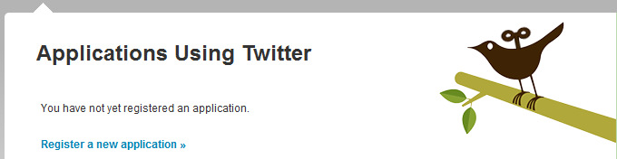
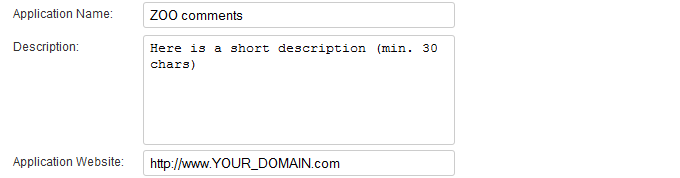
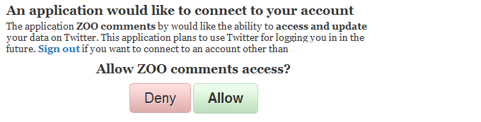

Click on Comments on the right side, so you can see the configuration with the Twitter settings.
Learn how to set up the Twitter connect for the ZOO comment system. It allows the visitors to sign in to their Twitter account and their profile picture will be inserted into the comment as the avatar.
The easiest way is to open the ZOO config in one browser window and open the Twitter website in another browser window, so you can simply copy&paste the needed data for this tutorial. We begin with the ZOO backend.
Click on the app instance in the tab bar of the ZOO, then click on Config in the second tab bar.

Click on Comments on the right side, so you can see the configuration with the Twitter settings.
Leave this browser window open and go to twitter.com/apps and log in with your Twitter account data.
On the following screen, click on Register a new application.
Now you have to fill out the form, we will only mention the fields, that are required to get Twitter connect to work
Give your new application a name, in my example we name it ZOO comments and a description. You'll also have to type in the URL of your Joomla installation with the ZOO extension.
Choose Browser for the application type.

Type in your URL for the callback URL, set the default access type to Read&Write and choose Yes to use Twitter for login.


Enter the captcha and click on Save at the bottom. After this you will be redirected to a site with an overview of your application.

Copy the consumer key and the consumer secret from the following site, switch to your ZOO installation and paste it into the according fields in the comments configuration and enable the Twitter connect with the radio button.
Click on Save in the top right corner to save your settings in the ZOO extension
After you have set up the Twitter connect the visitors of your site will see a Twitter connect button underneath the comment field.
Pressing the button will redirect the visitor to a Twitter login site...

...and after typing in the login details, they have to allow the application to get data from their Twitter account.
After this they will be able to post a comment as a twitter user. You are all set.